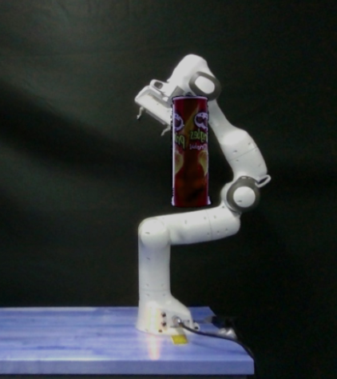
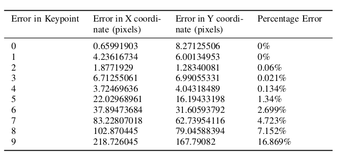

Abstract
This study introduces a sophisticated method for synthesizing authentic robot configurations within occluded environments, employing a hybrid framework that seamlessly integrates an Attention U-Net as a generator and a PatchNet as a discriminator in the context of the Wasserstein Generative Adversarial Network with Gradient Penalty (WGAN-GP). The primary objective is to address the challenges posed by occlusions in robotic environments, where joints may be partially or fully obscured. The significance of considering occluded images lies in their common occurrences within real-world robotic applications, where environmental clutter and obstacles often lead to partial or complete occlusion of robotic joints. Addressing this challenge is crucial for tasks such as motion planning, control, and manipulation, where accurate visual information is vital for successful operation. The proposed methodology contributes to overcoming the limitations posed by occluded images, thereby improving the robustness and reliability of robotic manipulation systems.
This is a reconstructed image (occlusion was present on the end effector). The blue points on the joints of the robot represent the true joint positions (labels) and the red point represents the predicted keypoints in case of occlusions.

Showing inpainting results using contextual attention
YCB Dataset Objects are superimposed on the key point locations of the robot.

Image Inpainting
Attention Unet
Wasserstein Loss
Showing inpainting results
Result table
Introduction
Image-based visual servoing (IBVS) algorithms have revolutionized robotic manipulation by enabling precise control based on visual feedback. These algorithms offer robustness to calibration errors but their success hinges on the selection of reliable visual features. Accurate keypoint detection, which identifies and localizes specific points of interest in an image, is crucial for various robotic tasks such as navigation, manipulation, and object recognition. While this approach proves effective in numerous scenarios, it contains an inherent flaw—control relies upon the camera maintaining an unobstructed perspective of the robot's complete structure. This restricts applicability in scenarios with occlusions, limited visibility and variable lighting conditions.
In practice, robots often operate in environments with occlusions caused by objects, shadows, or even their own bodies. These occlusions significantly hinder the performance of traditional keypoint detection algorithms, leading to inaccurate localization and ultimately impacting the robot's ability to perform its tasks effectively.
This research investigates the application of the Wasserstein Generative Adversarial Network with Gradient Penalty (WGAN-GP) for keypoint detection on robots operating in occluded environments. A novel two-stage approach is proposed that leverages the powerful capabilities of WGAN-GP.
Previous methodologies
Existing works for image inpainting can be mainly divided into two groups. The first group represents traditional diffusion-based or patch-based methods with low-level features. The second group attempts to solve the inpainting problem by a learning-based approach, e.g. training deep convolutional neural networks to predict pixels for the missing regions. Recently, image inpainting systems based on deep learning are proposed to directly predict pixel values inside masks.
Among the various methods, techniques like contextual attention layers, partial convolutions, and fast Fourier convolutions have shown improvements in inpainting quality and addressed limitations of standard encoder-decoder networks.
The contextual attention layer is a differentiable and fully-convolutional module that enables the network to exploit long-range dependencies and improve reconstruction quality while remaining compatible with arbitrary image resolutions. The only limitation using this method is that it requires the exact location information of the occlusion. Whereas in realtime applications this is impossible to extract.
Partial convolution incorporates a masking and re-normalization step that restricts the convolution operation to valid pixels, demonstrating improved inpainting quality on irregular masks. However, it has limitations like heuristic pixel classification, limited user interaction, progressive mask vanishing, and limited channel flexibility.
Fast Fourier Convolutions (FFCs) enable an image-wide effective receptive field even in early layers, improving perceptual quality and parameter efficiency while exhibiting generalization to unseen high resolutions.
Approach
To ensure the best possible representation of occluded elements, we considered both simulated and real images. Ultimately, real images emerged as the ideal choice, allowing for more accurate and nuanced reconstruction processes. The input images comprised occluded scenes, while the corresponding labels were derived from occlusion-free images. For the real images, we captured scenes featuring the Franka Panda Robot using an Intel RealSense Camera, relying on meticu- lously annotated data provided by the DREAM calibration. These annotations included the pixel locations of the robot’s six joints and bounding boxes outlining the robot, enhancing the accuracy of key point detection.
For the real images, we captured scenes featuring the Franka Panda Robot using an Intel RealSense Camera, relying on meticu- lously annotated data provided by the DREAM calibration. These annotations included the pixel locations of the robot’s six joints and bounding boxes outlining the robot, enhancing the accuracy of key point detection.
The dataset contains around 80K images including a variety of occlusions as mentioned above. Each image is of the size (640, 480, 3) and due to the limitation of compute powers, this project assumes a batch size of 4. The dataset preparation includes segmenting the YCB objects from the YCB dataset, removing the background of the segmented image and superimpos- ing the objects on our required image (robot keypoint)
The proposed methodology involves a two-stage approach that leverages the powerful capabilities of WGAN-GP:
1) Image Reconstruction:
- A WGAN-GP model is utilized to reconstruct occluded images. The occluded image is fed as input, and the WGAN-GP is trained to generate an output image where the occlusions are effectively removed, essentially "seeing through" the obstructions.
- This reconstructed image reveals the underlying keypoints that were previously hidden, enabling their accurate detection.
2) Keypoint Detection:
- Keypoint RCNN algorithm is applied to the reconstructed image. This algorithm analyzes the image features and identifies keypoints based on specific criteria, such as corners, edges, or blobs.
- By using the reconstructed image instead of the original occluded image, the keypoint detection process is not affected by the occlusions, leading to more accurate and reliable results.
Model Architecture and GANs'
The WGAN-GP architecture employed in this project combines an Attention U-Net as the generator and a PatchNet as the discriminator. The Attention U-Net comprises encoder and decoder blocks, incorporating attention mechanisms to enhance feature selection. The PatchNet discriminator consists of multiple convolutional layers with leaky ReLU activations and a linear layer with sigmoid activation for binary classification.
The advantages of the WGAN-GP structure lie in its ability to introduce a competitive dynamic between the generator and discriminator, promoting the generation of realistic images. The discriminator learns to distinguish authentic images from generated ones, driving the generator to produce more convincing results. This adversarial training process encourages the generator to capture intricate details and structures in the inpainted images, leading to visually pleasing and coherent outputs.
The Wasserstein distance, a crucial component in WGAN-GP, is defined as the expected value of the distance between two distributions, where they follow the optimal choice of a joint distribution. The Wasserstein distance offers advantages over traditional divergence metrics like KL divergence and JS divergence, ensuring stable and meaningful training by incorporating a gradient penalty term as a regularization mechanism during optimization.
Results
After constructing the model, occluded images serve as the input, and the model generates the inpainted counterparts as output. The resulting images can then be inputted into a keypoint detection model, allowing for the identification of joint locations within the image. This approach proves particularly effective for tracking joint positions in scenarios involving occlusions. The visual servoing technique benefits from this method, enabling robust performance even when parts of the scene are obstructed.
Figure at the side demonstrates the inpainted image being fed into a keypoint detection model (Keypoint RCNN) for joint location identification. The result table shows the success of this model, with detailed error metrics in keypoint detection for the inpainted images. The table highlights the accurate keypoint tracking achieved by the proposed method, even in the presence of occlusions, demonstrating its robustness and reliability for robotic manipulation systems.
Portfolio
Find my projects on my github profile.